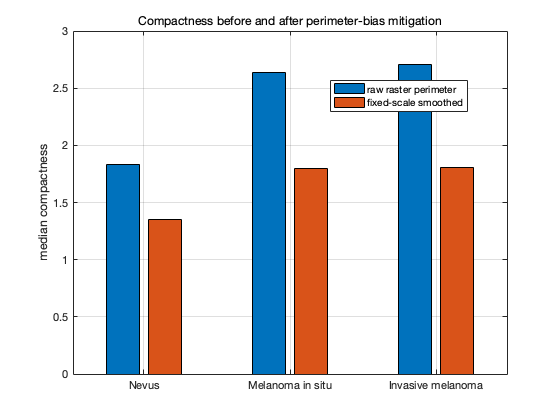
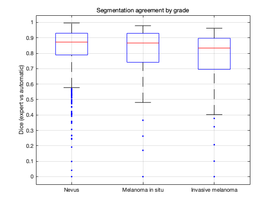

Part 1 — Morphological descriptors of melanocytic lesion borders
Fractal dimension and compactness from ISIC 2018 expert and automatic segmentations, stratified by nevus / melanoma in situ / invasive melanoma.
This report is generated from results/descriptors.csv. Publish it with
publish('scripts/report.m', struct('format','html','outputDir','results/report'))
MATLAB R2023a cannot open plain-text Live Code (that needs R2025a+), so this is a %%-sectioned script published to HTML rather than an .mlx.
The numbers here are not an end in themselves. They are the calibration targets for Part 3's cell-dynamics simulation, so the report leads with what would make them wrong — rasterisation bias, annotation style, resolution heterogeneity — before it reports what they are.
Contents
- Setup
- 1. Cohort composition
- 2. What the measurement pipeline does
- 3. Validation against shapes with known dimension
- 4. QC outcomes
- 5. Descriptor intervals by grade — the headline deliverable
- 6. Perimeter rasterisation bias — the largest false-positive risk
- 7. Dual-route agreement
- 8. Why the automatic route is primary
- 8b. The two confounds, tested
- 9. Calibration targets for Part 3
- 10. Licensing
Setup
root = fileparts(fileparts(mfilename('fullpath'))); addpath(root); addpath(fullfile(root, 'config')); addpath(fullfile(root, 'scripts')); % run_tests, analyze_results live here addpath(fullfile(root, 'tests')); cfg = default_config(); R = readtable(fullfile(cfg.paths.results, 'descriptors.csv'), 'TextType', 'string'); R.grade = categorical(R.grade, cfg.data.gradeOrder, 'Ordinal', true); labels = cfg.data.gradeLabels; % readtable reads the accepted flags back as numeric 0/1, which cannot be % used as a logical index. Normalise once rather than sprinkling logical() % at every use site, and blank the <missing> strings for the same reason. for v = ["expert_accepted", "otsu_accepted"] if ismember(v, R.Properties.VariableNames) R.(v) = logical(R.(v)); end end for v = ["expert_flags", "expert_DfFlag", "expert_rejectReason", ... "otsu_flags", "otsu_DfFlag", "otsu_rejectReason"] if ismember(v, R.Properties.VariableNames) R.(v)(ismissing(R.(v))) = ""; end end fprintf('Cohort as measured: %d lesions\n', height(R));
Cohort as measured: 2223 lesions
1. Cohort composition
ISIC 2018 Task1-2 Training, collection 63. A single source was chosen so that every image and its mask come from the same acquisition and annotation pipeline; pooling cohorts would confound grade with annotation protocol.
Grade is not in the challenge archive — the zips carry masks only — so it is joined back from the ISIC Archive API by isic_id via the current hierarchical taxonomy field diagnosis_3 (the legacy benign_malignant and mel_class fields were retired in 2024).
disp(groupsummary(R, 'grade')); fprintf('\nHistopathology-confirmed: %d / %d\n', nnz(R.histoConfirmed), height(R));
grade GroupCount
________ __________
benign 1863
in_situ 198
invasive 162
Histopathology-confirmed: 1598 / 2223
2. What the measurement pipeline does
Both segmentation routes funnel through the same morph.process_lesion, differing only in where the mask comes from. Any route disagreement is therefore attributable to segmentation, not to two subtly different measurement implementations.
Three design choices carry most of the validity burden:
- Box dimension is an infimum over covers, so N(eps) is minimised over a 3x3 lattice of grid origins, never averaged. Averaging estimates a different quantity.
- D_f is computed on the raw boundary only. Smoothing before box-counting would erase precisely the signal being measured. Only perimeter-derived descriptors see the smoothed contour.
- eps is made dimensionless (eps/D_eq) instead of resampling masks to a common size. Resampling a 4500 px lesion down to 512 px would destroy fine boundary detail preferentially on the highest-resolution images — that is, it would homogenise the very thing under study.
disp(cfg.boxcount); disp(cfg.scaling);
numScales: 25
numOffsets: 3
minBoxPx: 4
minBoxRatio: 0.0050
maxBoxRatio: 0.2500
slopeWindow: 5
slopeTol: 0.1000
minDecades: 0.6000
minPoints: 7
crossCheckTol: 0.0300
3. Validation against shapes with known dimension
The decisive test is the filled disk: fed a solid mask, a correct implementation returns D_f ~ 2.0 because it is covering a 2-D set. An implementation that silently measures the boundary of the filled region would return ~1.0 and every downstream number would be meaningless.
% Via run_tests rather than a bare runtests: the suite needs root, config and % tests all on the path, and calling runtests directly silently errors every % test instead of running them. results = run_tests(); disp(table({results.Name}', [results.Passed]', [results.Duration]', ... 'VariableNames', {'test','passed','seconds'}));
正在运行 TestBoxCounting
.........
已完成 TestBoxCounting
__________
正在运行 TestDescriptors
.......... .......... .
已完成 TestDescriptors
__________
正在运行 TestSegmentation
....
已完成 TestSegmentation
__________
Name Passed Failed Incomplete Duration Details
_________________________________________________________________ ______ ______ __________ _________ ____________
{'TestBoxCounting/testDiagonalLineIsDimensionOne' } true false false 0.4568 {1x1 struct}
{'TestBoxCounting/testCircleBoundaryIsDimensionOne' } true false false 0.21758 {1x1 struct}
{'TestBoxCounting/testSquareBoundaryIsDimensionOne' } true false false 0.034764 {1x1 struct}
{'TestBoxCounting/testFilledDiskIsDimensionTwo' } true false false 4.6024 {1x1 struct}
{'TestBoxCounting/testKochSnowflakeDimension' } true false false 0.31038 {1x1 struct}
{'TestBoxCounting/testScalingRegionIsReported' } true false false 0.040619 {1x1 struct}
{'TestBoxCounting/testCountsDecreaseWithBoxSize' } true false false 0.026329 {1x1 struct}
{'TestBoxCounting/testInsufficientRangeIsFlagged' } true false false 0.013814 {1x1 struct}
{'TestBoxCounting/testGridOffsetMinimisationLowersCounts' } true false false 0.048559 {1x1 struct}
{'TestDescriptors/testCompactnessOfCircleIsOne' } true false false 0.044262 {1x1 struct}
{'TestDescriptors/testCompactnessOfSquareIsFourOverPi' } true false false 0.0055435 {1x1 struct}
{'TestDescriptors/testCompactnessOfRasterCircleAfterSmoothing' } true false false 0.12494 {1x1 struct}
{'TestDescriptors/testSmoothingRemovesPerimeterBias' } true false false 0.01948 {1x1 struct}
{'TestDescriptors/testPerimeterDecreasesWithSmoothing' } true false false 0.12628 {1x1 struct}
{'TestDescriptors/testCircularityOfCircleIsOne' } true false false 0.010749 {1x1 struct}
{'TestDescriptors/testCircularityOfEllipseIsBelowCircle' } true false false 0.063947 {1x1 struct}
{'TestDescriptors/testCircularityIsNotReciprocalCompactness' } true false false 0.01675 {1x1 struct}
{'TestDescriptors/testAsymmetryOfDiskIsZero' } true false false 0.059541 {1x1 struct}
{'TestDescriptors/testAsymmetryAndElongationAreIndependent' } true false false 0.019359 {1x1 struct}
{'TestDescriptors/testAsymmetryOfHalfDiskIsPositive' } true false false 0.40202 {1x1 struct}
{'TestDescriptors/testSolidityAndConvexityOfDiskAreOne' } true false false 0.037918 {1x1 struct}
{'TestDescriptors/testSolidityAndConvexityNeverExceedOne' } true false false 0.058046 {1x1 struct}
{'TestDescriptors/testNotchedShapeHasLowSolidity' } true false false 0.0079388 {1x1 struct}
{'TestDescriptors/testCircleHasFlatPerimeterDecay' } true false false 0.010369 {1x1 struct}
{'TestDescriptors/testEmptyMaskIsRejected' } true false false 0.019554 {1x1 struct}
{'TestDescriptors/testBorderTouchingMaskIsRejected' } true false false 0.041712 {1x1 struct}
{'TestDescriptors/testLesionGrazingBorderIsKeptAndFlagged' } true false false 0.099208 {1x1 struct}
{'TestDescriptors/testTinyLesionIsRejected' } true false false 0.010573 {1x1 struct}
{'TestDescriptors/testTwoComponentsAreRejected' } true false false 0.013426 {1x1 struct}
{'TestDescriptors/testCleanDiskIsAcceptedWithSaneDescriptors' } true false false 0.11708 {1x1 struct}
{'TestSegmentation/testVignetteCornersAreDiscarded' } true false false 1.0139 {1x1 struct}
{'TestSegmentation/testBorderTouchingLesionIsNotReplacedBySpeck'} true false false 0.17678 {1x1 struct}
{'TestSegmentation/testSingleComponentIsReturned' } true false false 0.15918 {1x1 struct}
{'TestSegmentation/testLesionIsDarkerClassNotLighter' } true false false 0.14623 {1x1 struct}
34 passed, 0 failed, 0 incomplete (8.6 s)
test passed seconds
_________________________________________________________________ ______ _________
{'TestBoxCounting/testDiagonalLineIsDimensionOne' } true 0.4568
{'TestBoxCounting/testCircleBoundaryIsDimensionOne' } true 0.21758
{'TestBoxCounting/testSquareBoundaryIsDimensionOne' } true 0.034764
{'TestBoxCounting/testFilledDiskIsDimensionTwo' } true 4.6024
{'TestBoxCounting/testKochSnowflakeDimension' } true 0.31038
{'TestBoxCounting/testScalingRegionIsReported' } true 0.040619
{'TestBoxCounting/testCountsDecreaseWithBoxSize' } true 0.026329
{'TestBoxCounting/testInsufficientRangeIsFlagged' } true 0.013814
{'TestBoxCounting/testGridOffsetMinimisationLowersCounts' } true 0.048559
{'TestDescriptors/testCompactnessOfCircleIsOne' } true 0.044262
{'TestDescriptors/testCompactnessOfSquareIsFourOverPi' } true 0.0055435
{'TestDescriptors/testCompactnessOfRasterCircleAfterSmoothing' } true 0.12494
{'TestDescriptors/testSmoothingRemovesPerimeterBias' } true 0.01948
{'TestDescriptors/testPerimeterDecreasesWithSmoothing' } true 0.12628
{'TestDescriptors/testCircularityOfCircleIsOne' } true 0.010749
{'TestDescriptors/testCircularityOfEllipseIsBelowCircle' } true 0.063947
{'TestDescriptors/testCircularityIsNotReciprocalCompactness' } true 0.01675
{'TestDescriptors/testAsymmetryOfDiskIsZero' } true 0.059541
{'TestDescriptors/testAsymmetryAndElongationAreIndependent' } true 0.019359
{'TestDescriptors/testAsymmetryOfHalfDiskIsPositive' } true 0.40202
{'TestDescriptors/testSolidityAndConvexityOfDiskAreOne' } true 0.037918
{'TestDescriptors/testSolidityAndConvexityNeverExceedOne' } true 0.058046
{'TestDescriptors/testNotchedShapeHasLowSolidity' } true 0.0079388
{'TestDescriptors/testCircleHasFlatPerimeterDecay' } true 0.010369
{'TestDescriptors/testEmptyMaskIsRejected' } true 0.019554
{'TestDescriptors/testBorderTouchingMaskIsRejected' } true 0.041712
{'TestDescriptors/testLesionGrazingBorderIsKeptAndFlagged' } true 0.099208
{'TestDescriptors/testTinyLesionIsRejected' } true 0.010573
{'TestDescriptors/testTwoComponentsAreRejected' } true 0.013426
{'TestDescriptors/testCleanDiskIsAcceptedWithSaneDescriptors' } true 0.11708
{'TestSegmentation/testVignetteCornersAreDiscarded' } true 1.0139
{'TestSegmentation/testBorderTouchingLesionIsNotReplacedBySpeck'} true 0.17678
{'TestSegmentation/testSingleComponentIsReturned' } true 0.15918
{'TestSegmentation/testLesionIsDarkerClassNotLighter' } true 0.14623
4. QC outcomes
Gates are reported per-reason rather than as a single pass rate, because which lesions are lost matters more than how many. Border contact is judged as a fraction of boundary length rather than any-contact-at-all: an any-contact rule discards large lesions preferentially, and lesion size tracks severity, so that loss would land differentially across grades and manufacture a between-grade difference out of nothing.
fprintf('expert route accepted: %d / %d\n', nnz(R.expert_accepted), height(R)); rr = R.expert_rejectReason(R.expert_rejectReason ~= ""); if ~isempty(rr), disp(groupcounts(table(rr), 'rr')); end fprintf('\nbox-count scaling-region flags (expert route):\n'); disp(groupcounts(table(R.expert_DfFlag(R.expert_accepted), ... 'VariableNames', {'flag'}), 'flag'));
expert route accepted: 2088 / 2223
rr GroupCount Percent
_____________________ __________ _______
"fills_frame" 13 9.6296
"truncated_at_border" 122 90.37
box-count scaling-region flags (expert route):
flag GroupCount Percent
____________ __________ _______
"no_plateau" 24 1.1494
"ok" 1784 85.441
"unstable" 280 13.41
5. Descriptor intervals by grade — the headline deliverable
Median [Q1, Q3] is the primary form because the distributions are non-normal and the in-situ group is small. Where n >= 20 a 2.5-97.5 percentile reference interval is also given; that is the form Part 3 consumes.
% Primary analysis is the automatic route (see section 8 for why), with the % expert route reported alongside as the sensitivity arm. fprintf('########## PRIMARY: automatic route ##########\n'); A = analyze_results('otsu'); fprintf('\n\n########## SENSITIVITY: expert-mask route ##########\n'); Aexpert = analyze_results('expert'); %#ok<NASGU>
########## PRIMARY: automatic route ##########
Analysing 1581 accepted lesions (otsu route).
descriptor KW p p(FDR) eta2_H AUC balAUC C-index
----------------------------------------------------------------------------------
Df 3.244e-09 3.244e-09 0.0235 0.625 0.622 0.617
compactness 4.6e-31 1.61e-30 0.0873 0.740 0.738 0.728
circularity 7.358e-15 8.584e-15 0.0400 0.664 0.666 0.657
asymmetry 7.247e-27 1.268e-26 0.0750 0.723 0.721 0.712
solidity 3.571e-31 1.61e-30 0.0876 0.739 0.737 0.727
convexity 1.239e-30 2.891e-30 0.0860 0.738 0.735 0.726
perimeterDecaySlope 3.007e-22 4.21e-22 0.0615 0.702 0.698 0.691
===== per-grade intervals =====
--- Df ---
grade n median q1 q3 mean sd refLo refHi note
__________ ____ ______ ______ ______ ______ ________ _______ ______ ____
"benign" 1348 1.04 1.0217 1.0635 1.0482 0.042249 0.99448 1.159 ""
"in_situ" 124 1.0638 1.032 1.0948 1.0796 0.071348 1.001 1.3065 ""
"invasive" 109 1.0479 1.0251 1.092 1.0696 0.0626 1.0036 1.2565 ""
--- compactness ---
grade n median q1 q3 mean sd refLo refHi note
__________ ____ ______ ______ ______ ______ ______ ______ ______ ____
"benign" 1348 1.3514 1.2057 1.6472 1.6411 1.0179 1.0758 4.302 ""
"in_situ" 124 1.7995 1.4981 2.9832 2.9116 2.9207 1.2116 11.251 ""
"invasive" 109 1.8097 1.383 2.9676 2.5104 1.8847 1.1027 7.1119 ""
--- circularity ---
grade n median q1 q3 mean sd refLo refHi note
__________ ____ _______ _______ _______ _______ ________ _______ _______ ____
"benign" 1348 0.86257 0.81493 0.90039 0.84918 0.07369 0.66117 0.94862 ""
"in_situ" 124 0.8154 0.76134 0.8583 0.80418 0.081712 0.56776 0.91379 ""
"invasive" 109 0.82576 0.77021 0.86687 0.81137 0.084791 0.62734 0.94637 ""
--- asymmetry ---
grade n median q1 q3 mean sd refLo refHi note
__________ ____ ________ ________ _______ _______ ________ ________ _______ ____
"benign" 1348 0.083022 0.06086 0.11495 0.09863 0.065161 0.033446 0.28044 ""
"in_situ" 124 0.13072 0.098088 0.20039 0.16214 0.095717 0.055362 0.43662 ""
"invasive" 109 0.13552 0.080925 0.19903 0.15102 0.090412 0.038729 0.37355 ""
--- solidity ---
grade n median q1 q3 mean sd refLo refHi note
__________ ____ _______ _______ _______ _______ ________ _______ _______ ____
"benign" 1348 0.90972 0.86825 0.93621 0.88963 0.077074 0.65135 0.96977 ""
"in_situ" 124 0.84897 0.73491 0.88306 0.80506 0.11239 0.55874 0.93959 ""
"invasive" 109 0.85341 0.75899 0.91504 0.82402 0.10978 0.55344 0.95798 ""
--- convexity ---
grade n median q1 q3 mean sd refLo refHi note
__________ ____ _______ _______ _______ _______ ________ _______ _______ ____
"benign" 1348 0.93647 0.87653 0.96568 0.90396 0.093847 0.63831 0.99106 ""
"in_situ" 124 0.84085 0.73106 0.90401 0.79311 0.15018 0.41318 0.97059 ""
"invasive" 109 0.83922 0.7112 0.93402 0.81256 0.14622 0.47203 0.98314 ""
--- perimeterDecaySlope ---
grade n median q1 q3 mean sd refLo refHi note
__________ ____ _________ _________ _________ _________ ________ ________ _________ ____
"benign" 1348 -0.057051 -0.084398 -0.039133 -0.06517 0.034552 -0.14984 -0.019041 ""
"in_situ" 124 -0.087993 -0.1185 -0.067044 -0.098123 0.044757 -0.19823 -0.03233 ""
"invasive" 109 -0.08999 -0.12569 -0.052631 -0.090706 0.044256 -0.18036 -0.025442 ""
===== pairwise post-hoc (Dunn, Holm-corrected) =====
--- Df ---
groupA groupB medianA medianB z pAdjusted rankBiserial
________ __________ _______ _______ _______ __________ ____________
"benign" "in_situ" 1.04 1.0638 -5.538 9.1762e-08 0.30027
"benign" "invasive" 1.04 1.0479 -3.3327 0.0017199 0.19153
--- compactness ---
groupA groupB medianA medianB z pAdjusted rankBiserial
________ __________ _______ _______ _______ __________ ____________
"benign" "in_situ" 1.3514 1.7995 -9.9398 0 0.54206
"benign" "invasive" 1.3514 1.8097 -7.1648 1.5579e-12 0.40824
--- circularity ---
groupA groupB medianA medianB z pAdjusted rankBiserial
________ __________ _______ _______ ______ __________ ____________
"benign" "in_situ" 0.86257 0.8154 6.6145 1.1182e-10 -0.36028
"benign" "invasive" 0.86257 0.82576 5.1294 5.8136e-07 -0.29295
--- asymmetry ---
groupA groupB medianA medianB z pAdjusted rankBiserial
________ __________ ________ _______ _______ __________ ____________
"benign" "in_situ" 0.083022 0.13072 -9.1665 0 0.49994
"benign" "invasive" 0.083022 0.13552 -6.738 3.2115e-11 0.38393
--- solidity ---
groupA groupB medianA medianB z pAdjusted rankBiserial
________ __________ _______ _______ ______ __________ ____________
"benign" "in_situ" 0.90972 0.84897 10.08 0 -0.54893
"benign" "invasive" 0.90972 0.85341 6.9943 5.3313e-12 -0.39926
--- convexity ---
groupA groupB medianA medianB z pAdjusted rankBiserial
________ __________ _______ _______ ______ __________ ____________
"benign" "in_situ" 0.93647 0.84085 9.9253 0 -0.54147
"benign" "invasive" 0.93647 0.83922 7.0304 4.1198e-12 -0.40028
--- perimeterDecaySlope ---
groupA groupB medianA medianB z pAdjusted rankBiserial
________ __________ _________ _________ ______ __________ ____________
"benign" "in_situ" -0.057051 -0.087993 8.4145 0 -0.45766
"benign" "invasive" -0.057051 -0.08999 5.9717 4.6954e-09 -0.3416
Wrote /Users/applemima1111/MatlabPlayground/Part1/results/calibration_targets_otsu.json
########## SENSITIVITY: expert-mask route ##########
Analysing 2088 accepted lesions (expert route).
descriptor KW p p(FDR) eta2_H AUC balAUC C-index
----------------------------------------------------------------------------------
Df 4.034e-05 9.412e-05 0.0087 0.576 0.584 0.575
compactness 0.007701 0.008984 0.0037 0.539 0.548 0.540
circularity 0.0002635 0.0004025 0.0069 0.565 0.561 0.560
asymmetry 1.569e-11 1.098e-10 0.0229 0.614 0.606 0.605
solidity 0.01182 0.01182 0.0033 0.522 0.532 0.525
convexity 0.0002875 0.0004025 0.0069 0.562 0.569 0.562
perimeterDecaySlope 3.294e-05 9.412e-05 0.0089 0.573 0.580 0.572
===== per-grade intervals =====
--- Df ---
grade n median q1 q3 mean sd refLo refHi note
__________ ____ ______ ______ ______ ______ ________ _______ ______ ____
"benign" 1760 1.0244 1.0097 1.1168 1.069 0.085952 0.99007 1.2822 ""
"in_situ" 184 1.0182 1.0088 1.0351 1.0468 0.072972 0.99115 1.253 ""
"invasive" 144 1.0157 1.0076 1.032 1.0385 0.06142 0.99492 1.2252 ""
--- compactness ---
grade n median q1 q3 mean sd refLo refHi note
__________ ____ ______ ______ ______ ______ _______ ______ ______ ____
"benign" 1760 1.2521 1.11 1.5071 1.4717 0.68469 1.0307 3.5962 ""
"in_situ" 184 1.2399 1.105 1.4335 1.5276 1.0987 1.0358 4.7909 ""
"invasive" 144 1.1671 1.0915 1.3249 1.3336 0.50571 1.0313 3.1435 ""
--- circularity ---
grade n median q1 q3 mean sd refLo refHi note
__________ ____ _______ _______ _______ _______ ________ _______ _______ ____
"benign" 1760 0.88386 0.84331 0.91604 0.87346 0.061301 0.73185 0.95522 ""
"in_situ" 184 0.86597 0.83149 0.89995 0.85824 0.059441 0.73001 0.94888 ""
"invasive" 144 0.8761 0.83255 0.90948 0.86818 0.058862 0.72347 0.96053 ""
--- asymmetry ---
grade n median q1 q3 mean sd refLo refHi note
__________ ____ ________ ________ ________ ________ ________ ________ _______ ____
"benign" 1760 0.0627 0.046486 0.08617 0.069449 0.034038 0.024502 0.15042 ""
"in_situ" 184 0.081773 0.056575 0.11933 0.093186 0.051644 0.030624 0.21789 ""
"invasive" 144 0.07079 0.049062 0.095615 0.07919 0.041474 0.029514 0.18937 ""
--- solidity ---
grade n median q1 q3 mean sd refLo refHi note
__________ ____ _______ _______ _______ _______ ________ _______ _______ ____
"benign" 1760 0.9421 0.90719 0.98536 0.93585 0.054565 0.80248 0.99803 ""
"in_situ" 184 0.94187 0.89889 0.98325 0.92779 0.068816 0.75753 0.99804 ""
"invasive" 144 0.95896 0.93039 0.98864 0.94683 0.053929 0.80513 0.99871 ""
--- convexity ---
grade n median q1 q3 mean sd refLo refHi note
__________ ____ _______ _______ _______ _______ ________ _______ _______ ____
"benign" 1760 0.95092 0.88592 0.99762 0.91691 0.10452 0.61911 0.99998 ""
"in_situ" 184 0.96517 0.91251 0.99686 0.92862 0.10746 0.5459 0.99998 ""
"invasive" 144 0.98187 0.94151 0.99822 0.94925 0.084172 0.65668 0.99999 ""
--- perimeterDecaySlope ---
grade n median q1 q3 mean sd refLo refHi note
__________ ____ _________ _________ __________ _________ ________ ________ __________ ____
"benign" 1760 -0.068204 -0.11018 -0.0086974 -0.07447 0.069722 -0.24882 -0.0054729 ""
"in_situ" 184 -0.040318 -0.081885 -0.0090337 -0.058704 0.062044 -0.22712 -0.0055603 ""
"invasive" 144 -0.015616 -0.072563 -0.007868 -0.046417 0.054607 -0.21415 -0.0059324 ""
===== pairwise post-hoc (Dunn, Holm-corrected) =====
--- Df ---
groupA groupB medianA medianB z pAdjusted rankBiserial
________ __________ _______ _______ ______ __________ ____________
"benign" "in_situ" 1.0244 1.0182 2.8064 0.010019 -0.12628
"benign" "invasive" 1.0244 1.0157 3.7406 0.00055074 -0.18632
--- compactness ---
groupA groupB medianA medianB z pAdjusted rankBiserial
________ __________ _______ _______ ______ _________ ____________
"benign" "invasive" 1.2521 1.1671 3.1174 0.005474 -0.1559
--- circularity ---
groupA groupB medianA medianB z pAdjusted rankBiserial
________ _________ _______ _______ ______ __________ ____________
"benign" "in_situ" 0.88386 0.86597 3.9028 0.00028531 -0.17488
--- asymmetry ---
groupA groupB medianA medianB z pAdjusted rankBiserial
_________ __________ ________ ________ _______ _________ ____________
"benign" "in_situ" 0.0627 0.081773 -6.7414 4.707e-11 0.301
"benign" "invasive" 0.0627 0.07079 -2.6389 0.016635 0.13289
"in_situ" "invasive" 0.081773 0.07079 2.6387 0.016635 -0.17723
--- solidity ---
groupA groupB medianA medianB z pAdjusted rankBiserial
_________ __________ _______ _______ _______ _________ ____________
"benign" "invasive" 0.9421 0.95896 -2.8193 0.014441 0.14171
"in_situ" "invasive" 0.94187 0.95896 -2.6984 0.014441 0.16765
--- convexity ---
groupA groupB medianA medianB z pAdjusted rankBiserial
________ __________ _______ _______ _______ __________ ____________
"benign" "invasive" 0.95092 0.98187 -3.8522 0.00035122 0.19206
--- perimeterDecaySlope ---
groupA groupB medianA medianB z pAdjusted rankBiserial
________ __________ _________ _________ _______ __________ ____________
"benign" "invasive" -0.068204 -0.015616 -4.1841 8.5894e-05 0.20785
Wrote /Users/applemima1111/MatlabPlayground/Part1/results/calibration_targets_expert.json
6. Perimeter rasterisation bias — the largest false-positive risk
Raster perimeter is systematically inflated, and inflated more for irregular boundaries. Left uncorrected it would make melanomas appear less compact for purely digital reasons, which is exactly the study's headline claim arriving as an artefact.
The check: if a between-grade compactness gap survives fixed-physical-scale smoothing it is geometric; if it collapses once sigma exceeds a few pixels, it was rasterisation.
% Run on the PRIMARY (automatic) route: that is where the compactness % difference actually lives, so that is where the rasterisation artefact % would have to be ruled out. Aacc keeps the expert subset for section 8. Aacc = R(R.expert_accepted, :); Aprim = R(R.otsu_accepted, :); g = categories(Aprim.grade); rawMed = arrayfun(@(k) median(Aprim.otsu_compactnessRaw(Aprim.grade == g{k}), 'omitnan'), 1:numel(g)); smMed = arrayfun(@(k) median(Aprim.otsu_compactness(Aprim.grade == g{k}), 'omitnan'), 1:numel(g)); figure; bar([rawMed(:), smMed(:)]); set(gca, 'XTickLabel', labels); legend({'raw raster perimeter','fixed-scale smoothed'}, 'Location','best'); ylabel('median compactness'); grid on; title('Compactness before and after perimeter-bias mitigation'); fprintf('raw gap benign->invasive: %+.4f\n', rawMed(end) - rawMed(1)); fprintf('smooth gap benign->invasive: %+.4f\n', smMed(end) - smMed(1));
raw gap benign->invasive: +0.8716 smooth gap benign->invasive: +0.4583

7. Dual-route agreement
Agreement is stratified by grade because the stratification is itself a result. If automatic-versus-expert agreement falls monotonically with severity, that is a biological statement — malignant borders are objectively harder to delimit. If agreement is flat across grades, the automatic route is a valid substitute on datasets without expert masks. Both outcomes are findings, not appendix material.
both = R(logical(R.expert_accepted) & logical(R.otsu_accepted), :); if ~isempty(both) && any(isfinite(both.dice)) disp(groupsummary(both, 'grade', {'median','mean'}, {'dice','jaccard','areaRatio'})); figure; boxplot(both.dice, both.grade, 'Labels', labels, 'Symbol', '.'); ylabel('Dice (expert vs automatic)'); grid on; title('Segmentation agreement by grade'); fprintf('\n%-18s %6s %8s %9s %9s %12s\n', ... 'descriptor','n','CCC','bias','sdDiff','reliability'); fprintf('%s\n', repmat('-', 1, 68)); for d = 1:numel(cfg.stats.descriptors) name = cfg.stats.descriptors{d}; ec = ['expert_' name]; oc = ['otsu_' name]; if ~all(ismember({ec, oc}, both.Properties.VariableNames)), continue; end ag = agree.descriptor_agreement(both.(ec), both.(oc), both.grade); fprintf('%-18s %6d %8.3f %9.4f %9.4f %12.2f\n', ... name, ag.n, ag.ccc, ag.bias, ag.sdDiff, ag.reliabilityRatio); end % Df stratified, since that is the descriptor whose route choice is % actually under debate. agDf = agree.descriptor_agreement(both.expert_Df, both.otsu_Df, both.grade); fprintf('\nD_f agreement by grade:\n'); disp(agDf.byGroup); end
grade GroupCount median_dice mean_dice median_jaccard mean_jaccard median_areaRatio mean_areaRatio
________ __________ ___________ _________ ______________ ____________ ________________ ______________
benign 1311 0.8723 0.82728 0.77352 0.73154 0.79131 0.88026
in_situ 122 0.86629 0.80135 0.76413 0.70212 0.84507 0.88846
invasive 101 0.83357 0.76749 0.71464 0.65662 0.76417 0.85646
descriptor n CCC bias sdDiff reliability
--------------------------------------------------------------------
Df 1534 -0.057 -0.0216 0.0996 0.70
compactness 1534 0.102 0.2941 1.4381 0.75
circularity 1534 0.515 -0.0275 0.0642 1.08
asymmetry 1534 0.300 0.0339 0.0637 0.92
solidity 1534 0.100 -0.0514 0.0932 0.81
convexity 1534 0.004 -0.0220 0.1467 0.71
perimeterDecaySlope 1534 -0.117 0.0101 0.0817 0.67
D_f agreement by grade:
grade n ccc bias sdDiff medianAbs
__________ ____ _________ _________ ________ _________
"benign" 1311 -0.035683 -0.029325 0.097432 0.051364
"in_situ" 122 -0.14262 0.025943 0.10991 0.055792
"invasive" 101 0.07563 0.020984 0.088098 0.04437

8. Why the automatic route is primary
ISIC 2018 ground-truth masks are substantially polygon-traced rather than pixel-accurate: median collinear-boundary-vertex fraction 0.587, with 24.7% of masks above 0.85. A polygon boundary is locally straight by construction, so its box dimension is pinned near 1 regardless of the lesion underneath.
The effect turns out to be worse than attenuation. For benign versus invasive on expert masks, 5 of 7 descriptors run backwards relative to biological expectation -- invasive melanoma measures more compact, more solid and more convex than benign nevi -- and all 5 reversals survive Holm correction (p_adj 8.6e-5 to 1.4e-2). This is stated pairwise on purpose: a direction claim is a pairwise claim, and the omnibus Kruskal-Wallis p in route_comparison.csv is a three-group statistic that cannot support it.
The reversals are significant but SMALL: rank-biserial 0.13 to 0.21, eta^2 0.003 to 0.009. At n = 2088 a small effect reaches significance easily, so the defensible claim is that the bias is systematic and reproducible, not that it is large. Symmetrically, of the 2 descriptors pointing the right way only asymmetry is significant; circularity is not (p_adj = 0.22). On the automatic route all 7 point the expected way, all 7 are significant, and the effect sizes are an order of magnitude larger.
A sign reversal cannot be explained by "less detail": missing detail pushes an effect toward zero, it does not push it past zero. The most plausible mechanism is that annotation coarseness scales with lesion size -- larger, more irregular lesions receive proportionally coarser polygons, making their masks smoother than small benign ones.
That mechanism makes a falsifiable prediction, and the data agree with it: the 2 descriptors that do NOT reverse are exactly the 2 that do not depend on boundary detail. Asymmetry is a principal-axis fold overlap of the mask and circularity is the dispersion of centroid-to-boundary radii; both measure where the mass sits and are insensitive to local boundary wiggle. All 5 reversed descriptors depend on boundary detail -- perimeter length (compactness, convexity, perimeter decay), concavity (solidity), or the fine boundary itself (D_f).
The automatic route is therefore primary for ALL shape descriptors, not just D_f, with the expert route retained as the sensitivity arm. Two competing explanations for the automatic route's advantage were tested rather than assumed (section 8b); both survive.
D_f remains the WEAKEST of the seven descriptors (eta^2 0.024 vs 0.087 for compactness). The headline morphological signal in this cohort is carried by the perimeter- and hull-derived measures, not by fractal dimension.
% Show the pairwise evidence rather than asserting it. export_posthoc writes % one row per (route, descriptor, group pair) straight from the saved % analyses, so the directions and p values below cannot drift from them. export_posthoc(); PH = readtable(fullfile(cfg.paths.results, 'posthoc_all.csv'), 'TextType', 'string'); BI = PH(PH.groupA == "benign" & PH.groupB == "invasive", :); expectedUp = struct('Df', 1, 'compactness', 1, 'circularity', -1, ... 'asymmetry', 1, 'solidity', -1, 'convexity', -1, 'perimeterDecaySlope', -1); fprintf('\nBenign vs invasive, by route (direction vs biological expectation):\n'); fprintf('%-8s %-20s %10s %10s %8s %9s %s\n', ... 'route', 'descriptor', 'medBenign', 'medInvasive', 'p_adj', 'rankBis', 'verdict'); fprintf('%s\n', repmat('-', 1, 88)); for r = 1:height(BI) name = char(BI.descriptor(r)); obs = sign(BI.medianB(r) - BI.medianA(r)); good = obs == expectedUp.(name); sig = BI.pAdjusted(r) < cfg.stats.alpha; if good verdict = 'expected'; else verdict = 'REVERSED'; end if ~sig verdict = [verdict ' (n.s.)']; %#ok<AGROW> end fprintf('%-8s %-20s %10.4f %10.4f %8.2g %9.3f %s\n', ... BI.route(r), name, BI.medianA(r), BI.medianB(r), ... BI.pAdjusted(r), BI.rankBiserial(r), verdict); end fprintf('\nD_f by grade, expert route:\n'); disp(groupsummary(Aacc, 'grade', {'median','mean','std'}, 'expert_Df')); Botsu = R(R.otsu_accepted, :); if ~isempty(Botsu) fprintf('\nD_f by grade, automatic route:\n'); disp(groupsummary(Botsu, 'grade', {'median','mean','std'}, 'otsu_Df')); end
Wrote /Users/applemima1111/MatlabPlayground/Part1/results/posthoc_all.csv (42 rows)
Benign vs invasive, by route (direction vs biological expectation):
route descriptor medBenign medInvasive p_adj rankBis verdict
----------------------------------------------------------------------------------------
expert Df 1.0244 1.0157 0.00055 -0.186 REVERSED
expert compactness 1.2521 1.1671 0.0055 -0.156 REVERSED
expert circularity 0.8839 0.8761 0.22 -0.072 expected (n.s.)
expert asymmetry 0.0627 0.0708 0.017 0.133 expected
expert solidity 0.9421 0.9590 0.014 0.142 REVERSED
expert convexity 0.9509 0.9819 0.00035 0.192 REVERSED
expert perimeterDecaySlope -0.0682 -0.0156 8.6e-05 0.208 REVERSED
otsu Df 1.0400 1.0479 0.0017 0.192 expected
otsu compactness 1.3514 1.8097 1.6e-12 0.408 expected
otsu circularity 0.8626 0.8258 5.8e-07 -0.293 expected
otsu asymmetry 0.0830 0.1355 3.2e-11 0.384 expected
otsu solidity 0.9097 0.8534 5.3e-12 -0.399 expected
otsu convexity 0.9365 0.8392 4.1e-12 -0.400 expected
otsu perimeterDecaySlope -0.0571 -0.0900 4.7e-09 -0.342 expected
D_f by grade, expert route:
grade GroupCount median_expert_Df mean_expert_Df std_expert_Df
________ __________ ________________ ______________ _____________
benign 1760 1.0244 1.069 0.085952
in_situ 184 1.0182 1.0468 0.072972
invasive 144 1.0157 1.0385 0.06142
D_f by grade, automatic route:
grade GroupCount median_otsu_Df mean_otsu_Df std_otsu_Df
________ __________ ______________ ____________ ___________
benign 1348 1.04 1.0482 0.042249
in_situ 124 1.0638 1.0796 0.071348
invasive 109 1.0479 1.0696 0.0626
8b. The two confounds, tested
Segmentation quality. If the automatic route simply segments malignant lesions worse, its grade separation would be a quality gradient wearing the costume of biology. Agreement does decline with severity (Jonckheere- Terpstra z = -3.4, p = 0.0007), so the concern is real. But restricted to well-segmented lesions only (Dice >= 0.75, n = 1232) all seven descriptors remain significant with only modest attenuation. Under the artefact explanation the effect sizes would collapse; they do not.
Residual hair. Morphological opening is disabled because it eroded the lesion periphery, which leaves hair suppression to DullRazor alone. Hair is thin, dark and boundary-attached -- exactly what inflates a box dimension -- and D_f does rise with hair fraction (Spearman rho = 0.168, p = 1.6e-11), with hair burden itself differing by grade. So this was tested too: restricted to the least-hairy 40%, D_f's effect size nearly DOUBLES (eta^2 0.024 -> 0.046). Hair adds noise that masks the signal rather than manufacturing it.
Run route_confound_check to regenerate both tests.
route_confound_check();
===== 1. route acceptance by grade =====
grade n expert otsu
benign 1863 94.5% 72.4%
in_situ 198 92.9% 62.6%
invasive 162 88.9% 67.3%
===== 2. expert-vs-otsu agreement by grade =====
grade n medDice meanDice medAreaRatio
benign 1311 0.872 0.827 0.791
in_situ 122 0.866 0.801 0.845
invasive 101 0.834 0.767 0.764
Kruskal-Wallis on Dice across grades: p = 0.0006514, eta2_H = 0.0083
-> agreement differs by grade even if not monotonically;
check which grade is worst, not just the direction.
Jonckheere-Terpstra trend in Dice across grades: z = -3.379, p = 0.0007264 (decreasing with grade)
-> agreement DEGRADES monotonically with severity. The automatic
route's grade separation is confounded with segmentation quality.
===== 2b. hair fraction vs D_f (automatic route) =====
Spearman rho = 0.168, p = 1.604e-11, n = 1581
-> D_f rises with residual hair. Re-enable a small
opening or strengthen hair removal before trusting D_f.
hair fraction differs by grade: p = 0.001898
restricted to the least-hairy 40% (hairFrac <= 0.12036, n = 632):
per grade: 527 / 55 / 50
Df all: p=3.244e-09 eta2=0.0235 | low-hair: p=2.037e-07 eta2=0.0458
compactness all: p=4.6e-31 eta2=0.0873 | low-hair: p=1.077e-13 eta2=0.0918
solidity all: p=3.571e-31 eta2=0.0876 | low-hair: p=1.383e-13 eta2=0.0910
===== 3. separation restricted to well-segmented lesions (Dice >= 0.75) =====
n = 1232 of 1534 paired lesions (per grade: 1074 / 90 / 68)
| ALL paired | well-segmented only
descriptor | KW p eta2 AUC | KW p eta2 AUC
--------------------------------------------------------------------------
Df | 4.19e-09 0.024 0.626 | 5.403e-06 0.018 0.619
compactness | 2.803e-30 0.088 0.740 | 9.839e-22 0.077 0.732
circularity | 2.28e-14 0.040 0.664 | 6.341e-08 0.025 0.633
asymmetry | 6.401e-26 0.074 0.722 | 5.264e-18 0.063 0.711
solidity | 3.551e-30 0.087 0.739 | 2.523e-21 0.076 0.727
convexity | 6.498e-30 0.086 0.738 | 2.304e-21 0.076 0.730
perimeterDecaySlope | 1.848e-21 0.061 0.700 | 7.152e-16 0.055 0.701
7 of 7 descriptors remain significant among well-segmented
lesions.
9. Calibration targets for Part 3
Written to results/calibration_targets_otsu.json (primary) and ..._expert.json (sensitivity) so Part 3 loads the intervals directly. Hand-transcribing numbers between stages of a multi-part study is where quiet errors take root.
targetPath = fullfile(cfg.paths.results, 'calibration_targets_otsu.json'); if isfile(targetPath) disp(fileread(targetPath)); else fprintf('Run analyze_results(''otsu'') to generate %s\n', targetPath); end
{
"source": "Part1 ISIC 2018 Task1-2 Training, automatic Otsu segmentation of image pixels",
"route": "otsu",
"numLesions": 1581,
"gradeOrder": [
"benign",
"in_situ",
"invasive"
],
"descriptors": {
"Df": {
"benign": {
"n": 1348,
"median": 1.0399676184604649,
"iqr": [
1.0217147469215302,
1.06346662482285
],
"refInterval": [
0.99448241867554266,
1.1590037812208398
],
"mean": 1.0481720302413693,
"sd": 0.042249205566951345
},
"in_situ": {
"n": 124,
"median": 1.06382462691702,
"iqr": [
1.031986699337915,
1.0947518946194452
],
"refInterval": [
1.0010191590941639,
1.3064718193453919
],
"mean": 1.079574327871488,
"sd": 0.0713476804610389
},
"invasive": {
"n": 109,
"median": 1.04789735934038,
"iqr": [
1.0250736716068074,
1.0919648806972249
],
"refInterval": [
1.00356664382423,
1.2564924300163747
],
"mean": 1.0696260472862777,
"sd": 0.062600382559508
},
"auc": 0.62469912507482039,
"cIndex": 0.6173473748473749
},
"compactness": {
"benign": {
"n": 1348,
"median": 1.3513990935458,
"iqr": [
1.2057272186115049,
1.6472024639731848
],
"refInterval": [
1.0758090461502621,
4.3020207879267094
],
"mean": 1.641084922972692,
"sd": 1.017878661351618
},
"in_situ": {
"n": 124,
"median": 1.799502297353335,
"iqr": [
1.4980672046417549,
2.9831504578958148
],
"refInterval": [
1.2115783249780079,
11.251281447055781
],
"mean": 2.9115837900923753,
"sd": 2.9207390553344608
},
"invasive": {
"n": 109,
"median": 1.80965146849528,
"iqr": [
1.38301778205163,
2.9675588955164227
],
"refInterval": [
1.1027354556035349,
7.11192790436601
],
"mean": 2.5103790514254039,
"sd": 1.8847259227555531
},
"auc": 0.73972886234255775,
"cIndex": 0.72807997557997561
},
"circularity": {
"benign": {
"n": 1348,
"median": 0.862567084603074,
"iqr": [
0.81493033585481944,
0.90039082342345544
],
"refInterval": [
0.66117360309186524,
0.948622604274145
],
"mean": 0.84917566660739408,
"sd": 0.073690153166023037
},
"in_situ": {
"n": 124,
"median": 0.81540098743263245,
"iqr": [
0.76134197459079855,
0.858300405407831
],
"refInterval": [
0.56776490735146046,
0.91378609467664607
],
"mean": 0.80417897272974348,
"sd": 0.081711839528438635
},
"invasive": {
"n": 109,
"median": 0.82575648071722,
"iqr": [
0.77020535772244869,
0.866869881116705
],
"refInterval": [
0.62734183736630167,
0.94637183291205829
],
"mean": 0.81137346893195783,
"sd": 0.084791009574959747
},
"auc": 0.66439232816698679,
"cIndex": 0.65675824175824171
},
"asymmetry": {
"benign": {
"n": 1348,
"median": 0.083022229574170492,
"iqr": [
0.0608598907868215,
0.1149540256943315
],
"refInterval": [
0.0334457839698385,
0.28044396498093427
],
"mean": 0.098630232739917528,
"sd": 0.065161028735437984
},
"in_situ": {
"n": 124,
"median": 0.130722456597133,
"iqr": [
0.098088428080089454,
0.200394916036103
],
"refInterval": [
0.05536209754178302,
0.43661973591369818
],
"mean": 0.16214021965623965,
"sd": 0.095717192817666025
},
"invasive": {
"n": 109,
"median": 0.135519575557995,
"iqr": [
0.080924988990653424,
0.19902620254859127
],
"refInterval": [
0.038729001567165564,
0.3735532845491345
],
"mean": 0.15102477860434113,
"sd": 0.090411969631973857
},
"auc": 0.72283529246953,
"cIndex": 0.71218864468864473
},
"solidity": {
"benign": {
"n": 1348,
"median": 0.90971899466434247,
"iqr": [
0.86824701150252648,
0.93620961780846645
],
"refInterval": [
0.65135357743301214,
0.96976622486374076
],
"mean": 0.88963238023834068,
"sd": 0.077074342113725033
},
"in_situ": {
"n": 124,
"median": 0.84896610851553844,
"iqr": [
0.73490854432805852,
0.883062924344084
],
"refInterval": [
0.558738265664682,
0.93958509973075754
],
"mean": 0.80506346252575034,
"sd": 0.11239400970525147
},
"invasive": {
"n": 109,
"median": 0.853406817692421,
"iqr": [
0.75899428900782329,
0.91503534846678392
],
"refInterval": [
0.55344410722319715,
0.957984723651468
],
"mean": 0.82402484819881971,
"sd": 0.10978243879307921
},
"auc": 0.7394550502413364,
"cIndex": 0.72727411477411474
},
"convexity": {
"benign": {
"n": 1348,
"median": 0.936468008904153,
"iqr": [
0.876534644752577,
0.965676147872724
],
"refInterval": [
0.63830676562404876,
0.99105819488783675
],
"mean": 0.90396038132490208,
"sd": 0.093846576468201243
},
"in_situ": {
"n": 124,
"median": 0.84084818504445846,
"iqr": [
0.73105767050181147,
0.90400871646134051
],
"refInterval": [
0.4131822944059132,
0.97059152934772752
],
"mean": 0.79310867418006681,
"sd": 0.15017577410743915
},
"invasive": {
"n": 109,
"median": 0.839217970580122,
"iqr": [
0.71119601860174342,
0.93402260808313076
],
"refInterval": [
0.4720252456462129,
0.98314344405272935
],
"mean": 0.81256327020583352,
"sd": 0.14621539499856648
},
"auc": 0.73771029406146094,
"cIndex": 0.72605311355311353
},
"perimeterDecaySlope": {
"benign": {
"n": 1348,
"median": -0.057050960066394346,
"iqr": [
-0.084398277307151451,
-0.0391334175959835
],
"refInterval": [
-0.14983727921833359,
-0.019041096659679898
],
"mean": -0.065170337010028723,
"sd": 0.034552152100632366
},
"in_situ": {
"n": 124,
"median": -0.087992862731061855,
"iqr": [
-0.11850491066209951,
-0.06704414173468945
],
"refInterval": [
-0.19822940269000722,
-0.032330140183717888
],
"mean": -0.098122709723659468,
"sd": 0.044757049343547677
},
"invasive": {
"n": 109,
"median": -0.0899897491105204,
"iqr": [
-0.12569466491804399,
-0.052630757931118571
],
"refInterval": [
-0.18036004243770135,
-0.025441752417868495
],
"mean": -0.090706190648369961,
"sd": 0.044255871860743264
},
"auc": 0.70168171571936111,
"cIndex": 0.691449938949939
}
}
}
10. Licensing
ISIC images are licensed per-image (a CC-0 / CC-BY / CC-BY-NC mix). The per-image license and attribution string are retained alongside the results so any figure can be traced to its permissions at submission time.
disp(groupcounts(table(R.license, 'VariableNames', {'license'}), 'license'));
license GroupCount Percent
_______ __________ _______
"CC-0" 2223 100